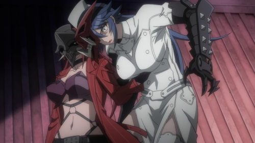

A bit of context for why I bothered watching the 2015 anime "Triage X": I'm a fan of "Highschool of the Dead," a horror-action comedy anime and manga featuring high school girls with buxom assets. The original artist behind the manga, Shoji Sato, also drew and wrote a manga called "Triage X," which received the anime adaptation featured here. A fan of the art, I hoped I would find value in this new show. Naturally, this is a horrible reason to give it a try, but with so much anime to see, one must have something driving their decisions to pick and choose.And I was pleasently surprised. "Triage X" is a not a good anime, but the impressions I got from online reactions was that it was outright horrible. Instead, I found it to be at least a competent action series, save for one or two major problems, which I'll get into...The premise is that there exists a secret organization in Tokyo called "Black Label," fighting to protect the city and keep the peace, taking out drug cartels and gang bosses outside the eye of the law or the public. The leader of the group describes such criminals as "tumors," assigning them as "label black," meaning there is no saving them: the only way to preserve the health of the city is to kill the villains. This is all based on real medical terminology, and is an inspired theme to use, even if hearing characters spout "I'll use my triage" like a superpower makes no sense in or out of the show's context. And if every criminal didn't automatically get assigned the worst possible label of "black."Black Label consists of a small group of specialized operatives. The newest member is lead character Arashi, the only male character, was saved from an accident as a child that required transplanting parts of his best friend's dead body, and his ghost haunts Arashi to this day as he works as a cold killer, questioning the meaning of humanity. The rest of the group are women, young, with massive, bouncing knockers. One is a masochistic, unusually strong nurse. Another is an sing-and-dance idol, skilled with explosives. The characters run the gammut of common archtypes for a brooding action-thriller anime. Why only one male character? Why ride motorcycles or weild guns with so little clothing? Why are the characters in high-school, when their faces, bodies and character makes them seem at least 10 years older? Because it's anime. You know the drill.Beyond all that, "Triage X's" plot struggles a bit without a single overarching villain. At least, one that's clear early on; we get snippets of the big bad at the end of each episode, who ultimately doesn't play into the anime. In a big cop-out, the final episode (ep. 10) is primarily a fan-service-filled one, as if the studio realized they didn't have a budget to finish a full 12-episode season, leaving a lot unanswered for a season 2 that will never come, forcing fans to read the manga. Episode 10 feels more like an OVA than the actual OVA, a dive into a historical moment not seen in the main series. Until then, each mission seems to center around a new illegal drug being circulated around the city, and the different parties behind the distribution. Another third-party group, an ambitious detective and his crew, try to uncover both the drug case and Black Label, but mostly just stand in the way of Label's job. It reminded me a bit of "Canaan," just a little less ambitious and competent. Only a little less, and not by much. Indeed, "Triage X" is, at least, a competent action anime. Each episode is well directed, with enough action and violence to keep things exciting, and good music choices to make the action more theatrical. It's occasionally stupid, but entertainingly so. The only issue there is the production's age: the story and animation feel like they came out of 2009, and immediately felt dated. Even the character designs, inspired by Sato's manga, come off as flat, and for certain characters, massive breasts are just distracting. Even so, viewers who came for the sexy girls should be satisfied (some camera shots leave nothing to the imagination). It's a shame Sentai Filmworks didn't produce an English dub, as this show in particular would have benefited from one.Now, let's get into the biggest problem with "Triage X": its treatment of women. Aside from hero characters having chests that jiggle like jello, we also get a lot of sexual violence, in almost every episode. It ranges from torture, to rape, to embaressment, or all of the above, usually clad in their underwear, or nothing at all. One episode has a lineup of exclusively cute female hostages, in their underwear, at the edge of a building, being executed one by one by a terrorist: at one point, one offers to seduce him for her safety. All well animated too, I'll add. It's all to be both sexy and edgy. Instead, it was simply gross. The multiple bathing scenes of the heroes bathing was more than enough fanservice, and "Highschool of the Dead" proved that exciting action and character drama could be done alongside it. "Triage X" goes too far. All-in-all, "Triage X" does more right than it does wrong, even if the mistakes it makes are rightfully enough to deter most viewers. If you don't mind, or even if these are selling points for you... then you should be plenty satisfied with the series.
- "Ani" More reviews can be found at : https://2danicritic.github.io/ Previous review: review_Treasure_Planet Next review: review_Trigun